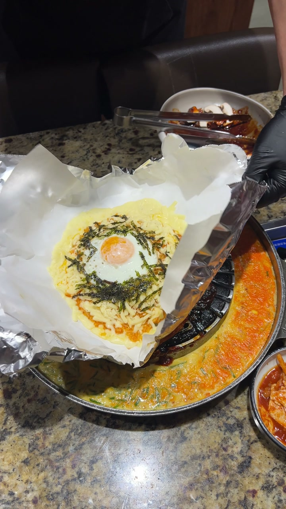
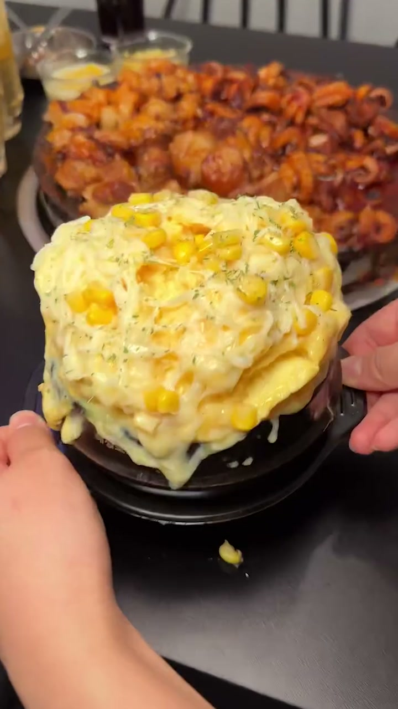

🎬 开场选1 — 选择开场镜头
请从以下两种中选择一种作为视频的第一个镜头。
Hook 1
🧀 奶酪球+章鱼
一次性将玉米奶酪倒入章鱼是重点。
Hook 2

🧀 提起奶酪球
用2个汤匙将奶酪球向上拉伸的画面。
솥고집 明洞店
三层肉专门店
📌 必要话题标签
📋 솥고집 拍摄指南
套餐3 章鱼三层肉+奶酪球
请参考以下顺序和角度进行拍摄。最重要的是展现自然反应和个人风格。
请从以下两种中选择一种作为视频的第一个镜头。
🧀 奶酪球+章鱼
一次性将玉米奶酪倒入章鱼是重点。
🧀 提起奶酪球
用2个汤匙将奶酪球向上拉伸的画面。
拍摄前请参考以下视频，熟悉构成和流程后，以自己的风格拍摄即可。
솥고집 章鱼三层肉 参考视频
请在视频中逐一展示以下菜单。
请参考参考视频，拍摄以下全部11个镜头。
 01开场
01开场一次性将玉米奶酪倒入章鱼是重点。
 02特写
02特写用两支汤匙提起奶酪球的近距离特写，拉伸的奶酪丝是亮点。
 03摆盘
03摆盘 04高潮
04高潮让菜单一目了然，拍出美味感。
 05特写
05特写用夹子夹满完成的章鱼的近距离特写。
 06参考
06参考一起提起章鱼+三层肉+奶酪，大量奶酪拉伸效果。
 07吃播
07吃播用水芹菜+生菜+奶酪+三层肉+章鱼制作奶酪包饭后吃的场景。

08配菜将炒饭对折再打开的场景，让奶酪炒饭清晰可见。
 09参考
09参考大勺挖奶酪炒饭，展示奶酪拉伸效果。

10特写放下瞬间让蒸蛋蓬松地摇晃，或用汤匙敲打上部，使其看起来像布丁。
 11结尾
11结尾大勺挖取蒸蛋，放上章鱼后吃。